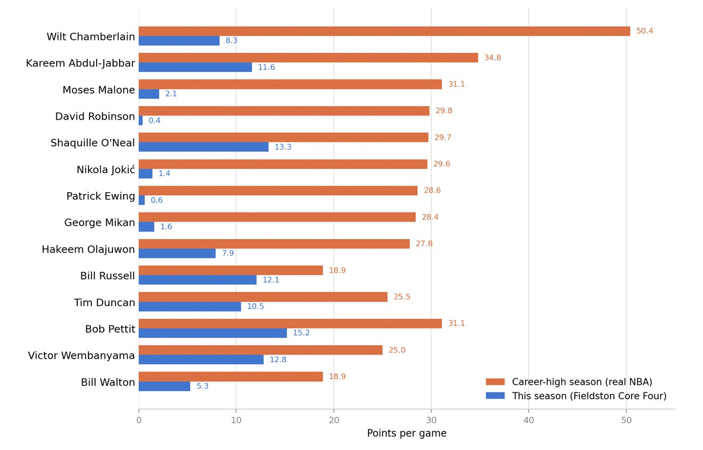

FLAMINGTON — Here is a sentence that should not be possible in this league: the leading scorer among true centers this season is Shaquille O'Neal, at 13.3 points a game. Even folding in the hybrid forward-centers doesn't save the position much — Bob Pettit leads that group at 15.2, which is still a full 35 points a game short of what a man his size once proved was possible.
Not Wilt Chamberlain, who once averaged 50.4 points across an entire NBA season and is on record insisting that number was more a matter of coaches not throwing him the ball enough than any real ceiling on his game. Not George Mikan, the sport's first true offensive giant. Not Kareem Abdul-Jabbar, owner of the most unblockable shot the game has ever produced. Not Bob Pettit, Bill Walton, Moses Malone, David Robinson, Hakeem Olajuwon, Patrick Ewing, Victor Wembanyama, or Nikola Jokić — a list that, assembled anywhere else, would be the single greatest offensive frontcourt ever fielded. Assembled here, it's producing a league leader averaging barely half of what Wilt did in his quietest season.
So what happened? A few theories, none of them satisfying on their own.

Theory One: The Game Moved On Without Them
The easy explanation is that the sport simply passed the back-to-the-basket center by — that a league built around Gervin, Jordan, Baylor, Magic, and West doesn't leave enough usage on the table for a traditional five to eat. There's something to this. When your roster construction rewards versatile wings above almost everything else, as this league's own MVP and Sixth Man ballots have shown all season, a center's box score becomes a rounding error next to what the perimeter talent is doing with the ball.
But that theory has a hole in it. Wilt averaged 50 points a game in an era that had plenty of its own perimeter stars. Kareem won six MVPs surrounded by some of the most stacked rosters in league history. Great scoring bigs have always found a way to get theirs regardless of who else is on the floor. Something else is going on.
Theory Two: The Defensive Specialists Ate the Offense
A more interesting read: maybe it's not that bigs can't score in this league — it's that the other bigs won't let them. Bill Russell, Tim Duncan, and Shaq himself have spent this season proving that rim protection and rebounding alone can carry a roster to the top of the standings without needing to put up big numbers on the other end. If the highest-value version of a center in this league is a defensive anchor, why would anyone build a five around one who just scores?
Put differently: the scoring bigs aren't extinct. They're just competing for playing time against a version of themselves that wins more games doing less on offense.